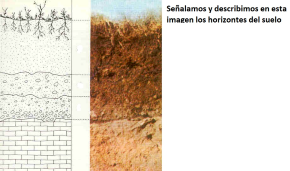
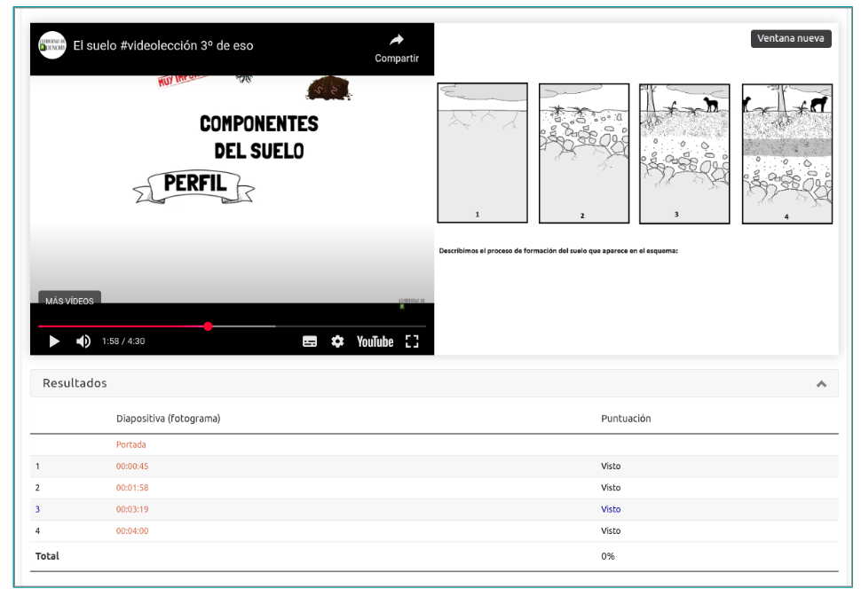
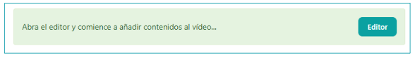
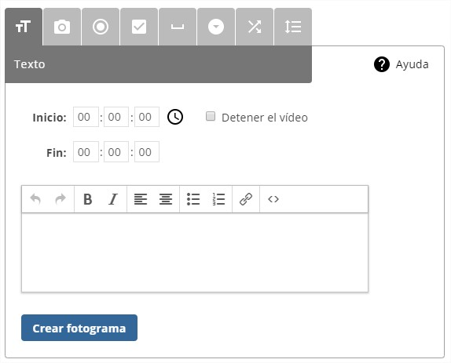
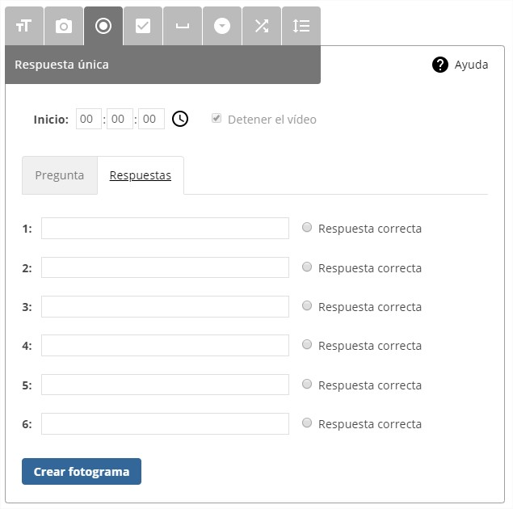
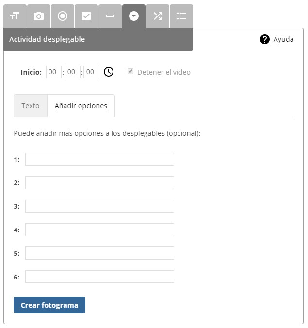
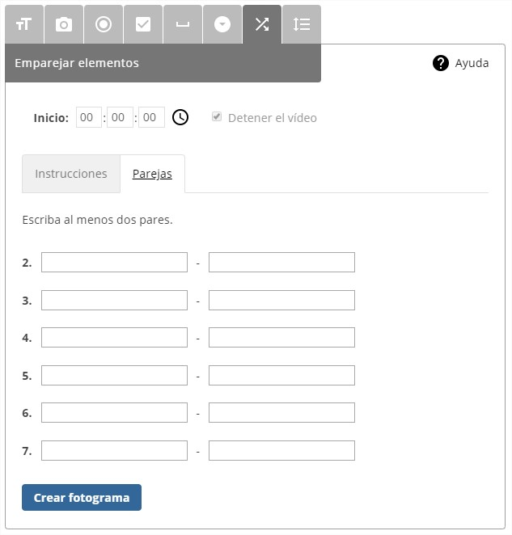
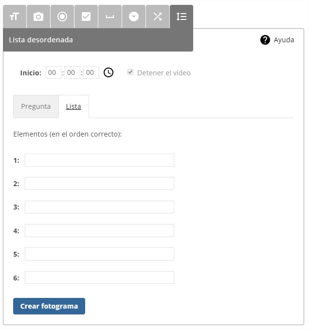

What is it?
This iDevice allows Incorporate a video to our resource (from our computer or through an URL) and introduce different types of questions along the samePausing the reproduction until the user responds or continues.
Examples of use
Video on the ground
The origin of the images: Formation of the soil.Sinnya . CC BY-SA 3.0 / horizons of the soil. by Carlosblh CC BY-SA 3.0-


How is it done?
When selecting the iDeviceThe interactive video“from the list of iDevices we will be shown the following in our eXeLearning:

Let’s see what the content of these tabs is on the interactive iDevice Video:
General Adjustments
In this section we will have to choose the source of the video and can choose between three possible options: Local File, YouTube or Mediateca of EducaMadrid.
- The local file: As a local file, the following formats are accepted: OGV/OGG, webm, mp4, flv. The selected file will be incorporated into the package (.elp).
- The YouTube: to link a YouTube video will only require your URL.: https://www.youtube.com/watch?v=v_rGjOBtvhI
- The Medium: to link a video from the EducaMadrid Mediateca, we need your URL.: https://mediateca.educa.madrid.org/video/3vmgyeluy8c35xzj
Once the source of the video is selected, we will be indicated that we can already open the source. Video Editor In the case of the local files, it will be necessary to save the iDevice first, and then edit it. In this way we make sure that the video is included in the .elp. In any case, the iPevice provides the necessary instructions. By having selected (or selected and uploaded the video, in the case for a local file), we will be able to start adding interactivity:

Show the score: Option that allows to determine whether you want to show the user the score obtained during reproduction and answer the questions and/or activities carried out during the interactive video.

personalized texts
In this section, which we only see if we have marked the Advanced Mode, we will be able to customize the predetermined texts that make up the iDevice.
Scorry
In the "SCORM" tab we will be able to determine if we want to save the results obtained by our students and in what conditions we want it to do when we export our contents.
Please note that this storage option will only be available for SCORM exports and when we publish our contents on platforms such as Moodle or other LMS platforms compatible with SCORS.
The Video Editor
Once the video source on which we want to add interactivity is configured, we open the video editor, which has the following appearance:

There are two sections of options. On the top right we have the options to save and leave the edition., and below, at the right of the video are presented the following options:
to help: It shows a brief information with each of the editor's options.

Create a cover: It allows you to set a title and a small introduction or an image that will serve as a cover for the video. You can also include an image instead of a text.

Creating a photographIt allows you to introduce a photogram in parallel to the video to show information or generate an activity for the user.
The tool is very versatile and It allows you to create photographs of 8 different types:
The text

On the top right there is a The Help button which indicates us:
- In which second the photo should be displayed (Started)
- If you don’t want the video to stop, indicate when the photo should be hidden (Ended)
- and push in
 To get the second current
To get the second current - The text: You can add lists, links...
The Note: The temporary configuration is similar in the rest of photogram categories, except in those where action is required by the user, where the option to stop the video will be mandatory.
image

Very similar to the text type in terms of operation, but only will allow us to enter an image, which will be displayed at the specified time. The end user will see the image and will be able to open it in a new window of his browser.
The unique answer

Multiple Answer

filling the holes

deployable activity

Imparation of elements

Disordered lists

. Video Editor (CC by-SA)